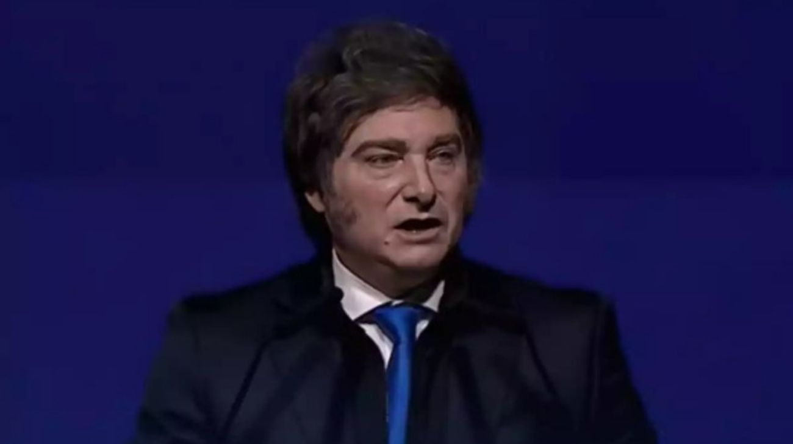

Milei envía la reforma electoral al Congreso: eliminación de las PASO, Ficha Limpia y fin del financiamiento público a la política
El presidente anunció desde Israel el envío del proyecto para este miércoles, en una iniciativa que combina tres ejes polémicos y que deberá conseguir mayoría absoluta en ambas cámaras para convertirse en ley.

El presidente Javier Milei anunció este martes que el Ejecutivo enviará este miércoles al Congreso un proyecto de reforma electoral integral que incluye tres pilares centrales: la eliminación de las Primarias Abiertas, Simultáneas y Obligatorias (PASO), modificaciones al esquema de financiamiento de los partidos políticos y la incorporación de la figura de Ficha Limpia, que impediría que personas con condenas firmes por corrupción puedan ser candidatos a cargos electivos nacionales. El anuncio fue realizado a través de la red social X mientras Milei se encontraba en Israel participando de los actos por el aniversario de la independencia de ese país.
La eliminación de las PASO es el eje más disruptivo del proyecto. El sistema vigente desde 2011 obliga a todos los partidos y alianzas a dirimir sus candidaturas en una elección primaria abierta a toda la ciudadanía, financiada con fondos del Estado. El oficialismo argumenta que ese mecanismo representa un costo innecesario para los contribuyentes y que cada fuerza política debería resolver sus internas con sus propios recursos y mecanismos internos. La reforma también apunta a modificar de raíz el financiamiento público de campaña, eliminando los aportes estatales para la impresión de boletas y para publicidad electoral, en línea con la visión libertaria de reducir los recursos que el Estado destina a sostener a los partidos políticos.
La inclusión de Ficha Limpia en el paquete es interpretada como una jugada política destinada a captar votos de sectores de la oposición que históricamente reclamaron esa reforma. En 2024 el oficialismo bloqueó en dos ocasiones el tratamiento de esa iniciativa en la Cámara de Diputados, y en 2025 dos senadores aliados impidieron su aprobación en el Senado, por lo que su incorporación ahora genera tanto expectativa como escepticismo en la oposición. La estrategia del gobierno parece clara: ofrecer Ficha Limpia como anzuelo para conseguir los votos que le faltan, ya que cualquier reforma electoral requiere mayoría absoluta, es decir 129 votos en Diputados y 37 en el Senado, umbrales que La Libertad Avanza no alcanza por sí sola.
El timing de la iniciativa no es casual. El año 2026 es el último en que se puede modificar el sistema electoral antes de que comience a regir el calendario de las legislativas de medio término, lo que convierte este debate en una carrera contra el reloj. Dentro del Congreso ya se escuchan voces en contra: sectores de la UCR y bloques de centro expresaron reparos ante la eliminación de las PASO, preocupados por cómo se resolverían las internas partidarias sin ese mecanismo. El oficialismo deberá negociar punto por punto si quiere ver aprobado un paquete que, en su conjunto, redefiniría las reglas de juego político para las elecciones de 2027.